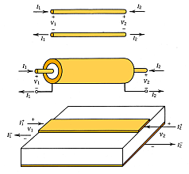
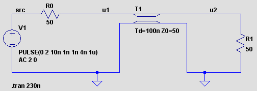
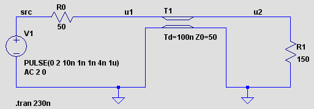
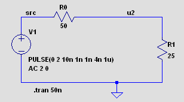
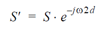
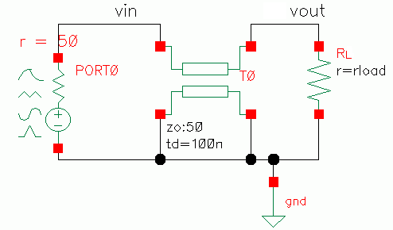
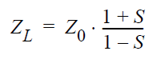
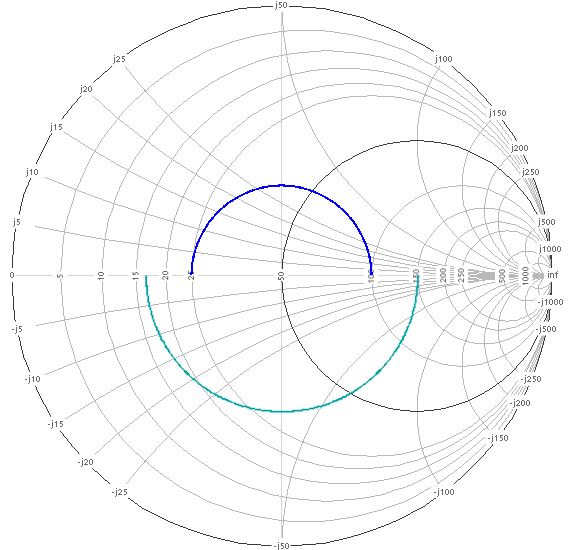
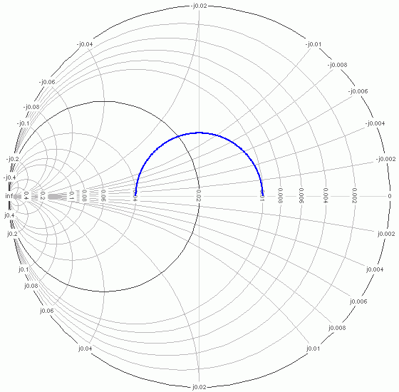
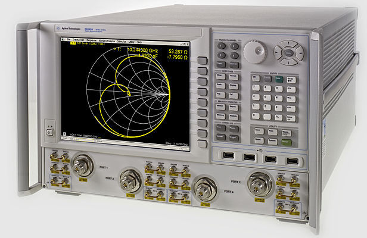

1. Lines and Reflexions
© Jean-Louis Noullet 2017

Let us assume that a small conductor segment exhibits an inductance proportional to its length and,
together with the other conductor, a capacitance also proportional to its length.1.1 Lossless Line Model
The goal is the study of the transmission of a signal by means of a homogeneous line made out of 2 conductors, the basic arrangement of which may be :- two parallel, symmetrical wires, possibly twisted
- a coaxial cable
- a flat ribbon parallel to a ground plane (microstrip, PCB RF, PCB digital)
Then we can model the line as a set of cascaded identical LC cells, seeking the limit of the model when the number of cells is increased towards infinity while their individual length approaches zero.

(It is also possible to include a representation of the ohmic losses by a resistor in series with each L, and the dielectric losses by means of a resistor in parallel with C, but for the moment we limit our study to lossless lines.)
The mathematical theory behind this is known as "Telegrapher's Equations" and can be found in fundamental courses on electricity. Summary of the essential features of the lossless line model, which can be derived from thought experiments (with the help of the theory of special relativity) :
- unlike discrete LC circuits, the line does not behave like a low-pass filter (the cutoff frequency of infinitesimal LC cells tends to infinity)
- The short-term transient impedance of each end of the line, said characteristic impedance Z0, is resistive,
and depends on physical properties of the line but :
- NOT on its length
- NOT on the load conditions at the other end of the line
- The long-term impedance of one end of the line depends on the load condition at the other end (this is obvious in the case of DC steady-state), so some information has to flow back from the other end, this is called signal reflexion
- The signal is propagated with a uniform velocity below the speed of light, this velocity depends mainly on physical constants of the material surrounding the conductors (permittivity and permeability).
1.2 Impedance Matching
Thought experiment : if we cut the line at some place and then connect the two halves again, we can say that the left half is loaded by the characteristic impedance of the other one, but since the cut is imaginary, this causes no discontinuity of the propagation of the signal, hence no signal reflexion.Each time the end of a line is connected to a resistor, the resistance of which is equal to the line's characteristic impedance, a similar situation is created, so in this case, no signal reflexion occurs, this condition is called impedance matching.
This situation is also similar to the "maximal transmitted power" condition well known in the theory of Thévenin and Norton models.
Circuit simulation programs like SPICE offer a built-in model for lossless lines, with 2 parameters : characteristic impedance and propagation time, which is the electric translation of the line length.
We are going to use the LTSPICE simulator from Linear Technology to exemplify these concepts.

The transient-mode simulation confirms that a 1 Volt pulse is transmitted through the line :
Experiment N°1
- the source produces a 2-Volt pulse with a 5 ns duration
- the impedance is matched at both line ends (50 Ohms)
- the left end of the line behaves like a 50 Ohm load viewed from the source
- the right end of the line behaves like a 50 Ohm source, with a 2 Volt e.m.f.
- at any point along the line, one could measure a 1 Volt pulse, according to the split line thought experiment described above
- the energy absorbed by the line between t=10 ns and t=16ns was stored, then given back at the other end between t=110 ns et t=116ns.
1.3 Simple pulse reflexion

Experiment N°2
- the source produces a 2 Volt pulse with a 5 ns duration
- the right end of the line is loaded by a 25 Ohm unmatched impedance
- the left end of the line still behaves like a 50 Ohm load viewed from the source, then it should absorb the same energy as in experiment 1 (principle of causality, special relativity)
- at some point along the line, one could measure a 1 Volt pulse as previously, let's call it the incident pulse
- the right end behaves like a 2 Volt, 50 Ohm source loaded with 25 Ohms, the pulse amplitude should be 2.0*(25/(50+25)) = 0.667 Volts, carrying less energy than stored at the left end
- to keep the energy balance, let us assume that a reflected pulse goes back to the left, carrying the remaining energy
- the amplitude of the reflected pulse should be -0.333 Volts so that the superposition of the 1 Volt incident pulse and the reflected pulse matches the amplitude of the outgoing pulse reaching the 25 Ohm load resistor
- energy balance is verified : (1)2/50 = (0.667)2/25 + (0.333)2/50

The experiment confirms the predictions, and one can see the arrival of the reflected pulse after a 200 ns round-trip.
By definition, the Reflexion coefficient, noted Lambda ou S is the ratio reflected amplitude / incident amplitude.
In the example above we have S = -0.333, then by generalization the following expression is derived :

This animated picture shows the arrival of a pulse at the boundary between two different transmission media with a reflexion coefficient of -0.333 (same as the simulation above).
(source : Wikipedia)
This partial reflexion phenomenon is also well known in all areas of vibration physics (acoustics, mechanics, hydrology, seismology) and in optics.
Partial reflexion is also called scattering, hence the S symbol.

Let us try to predict what is going to happen :
Experiment N°3
- left side : nothing changed
- the right end of the line is loaded by an 150 Ohm unmatched impedance
- same incident pulse as in experiments 1 and 2
- the right end still behaves like a 2 Volt, 50 Ohm source loaded with 150 Ohms, the pulse amplitude should be 2.0*(150/(50+150)) = 1.5 Volts, carrying less energy than stored at the left end in spite of a greater amplitude !
- the amplitude of the reflected pulse should be 0.5 Volts so that the superposition of the 1 Volt incident pulse and the reflected pulse matches the amplitude of the outgoing 1.5 Volt pulse
- energy balance is verified : (1)2/50 = (1.5)2/150 + (0.5)2/50
We note that the reflexion coefficient may be positive or negative. According to the S formula above, S varies from -1 to +1 when ZL takes real values ranging from zero to open-circuit.
1.4 Generalizing the reflexion coefficient
Experiment N°4
With the same schematic as experiment N°1 (25 Ohms on the right), the line length is reduced from 100ns down to 1ns.The superposition of the incident pulse and the reflected pulse, that we were observing previously at the right end, now extends to the left end. Then one can observe a 0.667 Volt plateau, during the time interval when both pulses are superimposed.

Experiment N°5

However the reflexion coefficient keeps its meaning, even while we cannot observe distinct incident and reflected signals :
- let's keep reducing the line length
- approaching zero, there isn't any line left, only a voltage divider
- the outcome is obviously a 0.666 Volt pulse
- by definition, the incident signal is what would appear in maximal power condition
- by definition, the reflected signal is the difference between the observed signal and the incident signal
- the reflexion coefficient is still defined as reflected amplitude / incident amplitude
- incident pulse = +1.0 V,
- reflexion coefficient S = (25-50)/(25+50) = -1/3
- reflected pulse -0.333 V
- resulting "actual" outgoing pulse 1 - 0.333 = 0.667 V
 This may look like an overkill for addressing the simple "voltage divider" problem, however the use of the same S parameter
for describing the matching relation between a source with impedance Z0 and a load with impedance ZL,
with or without an interposed transmission line, is a fundamental tool for the design of RF systems.
This may look like an overkill for addressing the simple "voltage divider" problem, however the use of the same S parameter
for describing the matching relation between a source with impedance Z0 and a load with impedance ZL,
with or without an interposed transmission line, is a fundamental tool for the design of RF systems.
1.5 Reflexion in AC mode
We now address the same problem in steady sinewave mode.Since the source is permanent, the incident signal and the reflected signal are superimposed at any place along the line and the only their algebraic sum may be observed, the amplitude of which depends on their relative phases.

Experiment N°6
Same schematic as experiment N°1 (25 Ohms on the right, 100 ns propagation time), AC analysis from 0 Hz to 2.5 MHz- incident signal 1V, reflected signal -0.333V
- at the right end, the sum of the incident and reflected signals with no phase shift yields a constant amplitude 1 V - 0.333V = 0.667 V
- at the right end, the incident phase shift with respect to the source is proportional to the frequency (pure delay property), and reaches 90° at 2.5 MHz (100 ns delay = T/4)
- at the left end, the superposition of the incident and reflected signals with a variable phase shift yields a variable amplitude,
lets us consider 3 particular cases :
- at 0 Hz, phase shift zero, amplitude 0.666V, the lossless transmission line is like transparent to DC, as expected
- at 2.5 MHz, round-trip phase shift 180° (2*100 ns delay = T/2), amplitude 1 V - (-0.333 V) = 1.333 V, phase zéro
- à 1.25 MHz, phase shift 90°, amplitude ((1)2 + (0.333)2)1/2 = 1.054 V, phase atan(0.333) = 18.4°

(dashed curves represent phases)
In the AC domain, the S formula is also valid for complex ZL values, yielding complex reflexion coefficients. So it is now possible to give an expression of the reflexion coefficient S' at the left end of the line as a function of the right end coefficient S and the frequency w :

where the complex exponential function represents a delay of 2 times the line's propagation delay d.
If we note Z'L the left end impedance of the line, we can express S' and the derive Z'L :
 then
then 
Note 1 : for S' and Z'L, we got complex, frequency-dependent expressions. These expressions are still valid for any complex value of the right side load impedance ZL, like any combination of R, L and C elements, or any arbitrary complex function of frequency.
Note 2 : each the reflexion coefficient describes the coupling between two devices at a port (a pair of nodes). This is why we have two coefficients in these examples, one at each end of the transmission line.
1.6 The Smith Chart
Let us consider now the problem of laboratory measurements on RF devices (passive ou semi-conductor).- Direct measurement of impedances requires an ideal current source (infinite impedance) with a voltage measurement
- Direct measurement of admittances requires an ideal voltage source (negligible impédance) with a current measurement
Even worse, the usual active RF devices (semi-conductor) use to be unstable in extreme conditions like open-circuit or short-circuit. In the other hand, what is feasible is :
- test the device with a Z0 impedance source, through a line of the same impedance
- measure the reflexion coefficient S' at the instrument end of the line, as a complex function of frequency
- perform calculations for deriving the device's impedance as a complex function of frequency
Simulation software tools used in RF engineering offer analysis modes similar to this measurement technique, then we will make the next experiments using the Spectre simulator from Cadence which offers an "S parameters" analysis, similar to the AC analysis but translating the results into reflexion coefficients.

Same schematic as in experiments 2 and 3, but the signal source is replaced by a special symbol called "port" where the source impedance is built-in, with the purpose of indicating to the simulator :
Experiment N°7
Same schematic as in experiments 2 and 3, but the signal source is replaced by a special symbol called "port" where the source impedance is built-in, with the purpose of indicating to the simulator :
- the value of the reference impedance for the calculations
- the pair of nodes where the reflexion coefficient is to be measured
 Results : the representation of S' (at the left end of the line) in the complex plane, with a frequency sweeping from
0 HZ to 2.5 MHz, for two values of the resistive load impedance ZL which we used in experiments 2 and 3
(25 Ohms et 150 Ohms).
Results : the representation of S' (at the left end of the line) in the complex plane, with a frequency sweeping from
0 HZ to 2.5 MHz, for two values of the resistive load impedance ZL which we used in experiments 2 and 3
(25 Ohms et 150 Ohms).
- the reflexion coefficient magnitude (modulus) is always below 1, so the curves remain inside the unit circle
- the complex exponential function representing the delay is translated into a rotation around the origin, in the negative direction, as the frequency increases.
- the right side coefficient S being real and constant, the left side coefficient S' stands on a circle
- S' is real for 0 Hz and 2.5 MHz, as seen in experiment 6, and would become real again for every multiple of 2.5 MHz if the frequency were further increased

Mr Phillip Hagar Smith's invention consists of adding on the complex plane a collection of scalings allowing direct reading of
the complex value of ZL.
The initial goal was to avoid tedious complex numbers calculations.
Even with modern computers performing all these calculations, the Smith Chart is still appreciated as a visual aid, just like the Bode plot.
The initial goal was to avoid tedious complex numbers calculations.
Even with modern computers performing all these calculations, the Smith Chart is still appreciated as a visual aid, just like the Bode plot.

On this chart built for a 50 Ohm reference impedance :
Another option is the admittance scalings :
- the origin (center of the chart) represents the reference impedance Z0
- each circle centered on the horizontal axis represents impedances having the same real part :
- the circle passing on points (0,0) and (1.0) represents all the impedances the real part of which is 50 Ohm
- the unit circle represents purely reactive impedances (null real part)
- each circle orthogonal to the previous ones represents impedances having the same imaginary part, inductive in the upper half, capacitive in the lower half
- real impedances are on the horizontal axis

Then we can read that our line loaded with 25 Ohms exhibits :
Modern vector analyzers are able to display measurements directly over Smith charts, and as well calculate and display the parameters at the far end
of the transmission line, provided that the line is calibrated (De-Embedding):- a 0.04 Siemens admittance at 0 Hz
- a 0.01 Siemens admittance at 2.5 MHz
